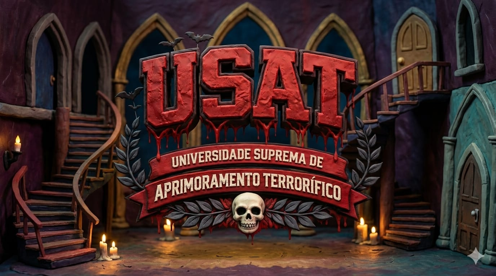

A nossa faculdade nasceu de uma ideia simples: todo grande filme de terror precisa de um grande vilão. Enquanto o cinema sempre celebrou heróis, nós decidimos olhar para o outro lado da história, o lado sombrio, misterioso e inesquecível.
Aqui, acreditamos que criar um vilão marcante é uma verdadeira arte. Afinal, são eles que fazem o público prender a respiração, apagar a luz com medo e lembrar do filme por anos. Nossa instituição é dedicada à formação de personagens icônicos do terror e do suspense. Por meio de cursos que misturam criatividade, atuação, narrativa, psicologia do medo e presença cênica, treinamos mentes brilhantes para dominar a arte de assustar. Inspirados pelos grandes clássicos do gênero, nosso objetivo é preparar a próxima geração de vilões lendários, aqueles que não apenas assustam, mas entram para a história do cinema. Aqui, cada aluno aprende que ser inesquecível é mais importante do que ser apenas assustador.A USAT foi fundada em 1987 por um cineasta louco e obcecado, com uma pergunta que ninguém sabia responder: por que o público lembra do monstro, mas esquece o herói? Após décadas estudando os grandes clássicos do terror, este chegou a uma conclusão simples — o vilão é a alma do filme. E almas assim não nascem por acidente. Elas são formadas. A inspiração veio de três figuras que marcaram gerações: uma garota de cabelos molhados que saia de dentro das telas, um palhaço sorridente que vivia em bueiros e se transformava no seu maior pesadelo, e um assassino mascarado que ligava para perguntar qual seu filme de terror favorito. Nenhum deles eram os heróis, mas todos eram inesquecíveis.
Desde 1987, mais de 3.200 vilões foram formados pelos corredores da USAT. Desses, 47 entraram para listas internacionais de personagens mais aterrorizantes do cinema independente. Dois ex-alunos tiveram suas histórias adaptadas para o streaming. Um deles prefere não ser identificado — por razões óbvias.